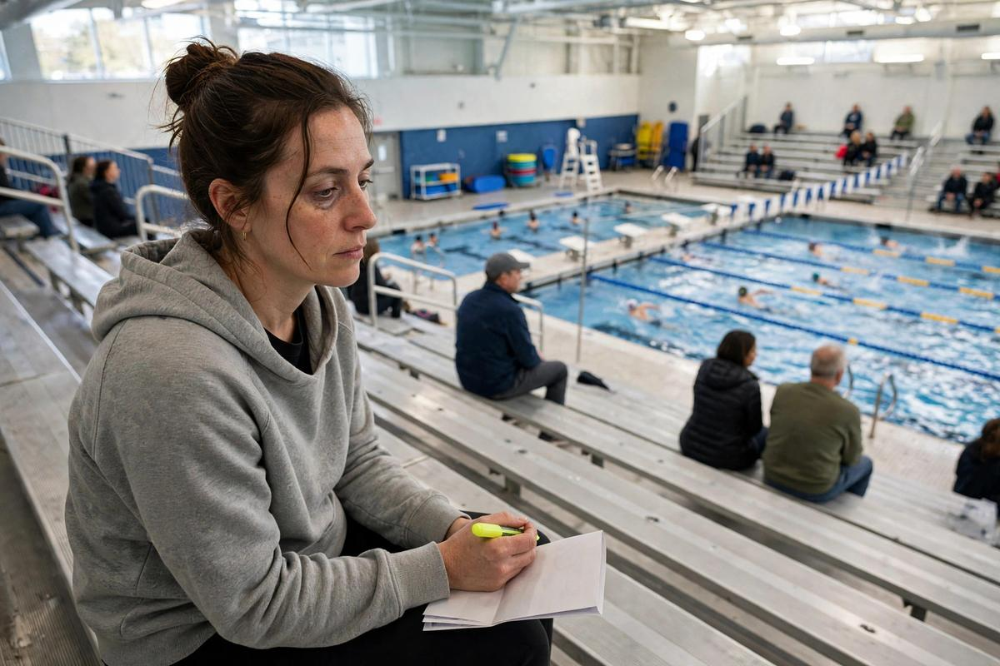

Youth Swim Meet Survival for Parents: Hours of Bleachers, Seconds of Swimming

Two to three hours. That is the length of one swim session, as one swim club puts it to its own families, and the same page delivers the second number: in all that time, a child may be in the water for a couple of minutes. Hold both numbers at once and the swim meet stops being a mystery. It is not a long event with some waiting in it. It is a waiting event with some swimming in it, and the parent in the bleachers is the one doing most of the waiting. A state swimming body's guide for first-time parents says a swimmer might race in four events spread over six hours. Four starts, four finishes, and a very long afternoon of plastic seating in between. The good news is that waiting, unlike weather, can be planned.
The heat sheet is a timetable, not a souvenir
Every survival move at a meet starts with one document: the heat sheet, the programme that lists each event, each heat within it, and which lane each swimmer races in. Parents of swimmers learn the shorthand early, because it gets written on the swimmer's hand or arm in marker before the racing starts: E3 H2 L5 means Event 3, Heat 2, Lane 5. A heat itself is one start's worth of swimmers, a series of 6 or 8 racing at once.
For the swimmer, the heat sheet is about not missing a start. Marshalling, the roll call that gathers swimmers a few events before their race, is called ahead of time: a child racing in Event 20 will likely be called around Event 17 or 18, and a swimmer who misses marshalling misses the race. One state guide calls that the number one mistake new families make. For the parent, the same sheet does a different job. It shows how long the wait is between a child's events and what time to be back in the pool area to watch. Highlight a child's four events the moment the sheet is in hand and the session changes shape: instead of one six-hour fog, it becomes four short appointments with long, honestly labelled gaps between them. Gaps can be spent. Fog can only be endured.
The session plan, block by block
A meet day runs in blocks, and each block asks something different of the parent watching it:
| Block | What is happening | The parent setting |
|---|---|---|
| Arrival and warm-up | Swimmers are on deck an hour before racing; a family aiming at an 8:00 warm-up is advised to be at the venue by 7:30 | Fully awake. This is admin time: heat sheet, highlighter, seat claimed, coffee secured |
| A child's own heats | Seconds to a couple of minutes in the water, after a marshalling call a few events ahead | Phone down, eyes up. These minutes are the entire point of the day |
| The long middle | Other children's heats, usually 30 or more minutes between a swimmer's own events, sometimes far longer | Rest is permitted here. This is the block the plan below is built for |
| Relays and the end | Relays close many sessions, and swimmers are not always named for them in the heat sheet | Awake again, and check with the coach before anyone leaves early |
Two venue facts shape every block. The pool hall itself runs hot, hot enough that club guides tell families to dress in layers, while the overflow seating areas, often a school gym pressed into service as a crash area, are usually cool. And the parent never crosses to the deck: spectators watch from the bleachers or the crash area, full stop.
The between-heats rest, done properly
A natatorium is the worst nap room in youth sport: bright, echoing, and narrated by an announcer reading event numbers all day. It is also, handled correctly, a workable one, because the heat sheet gives the one thing most dozing parents never have, a schedule. The research anchor comes from an unlikely place. NASA studied naps in long-haul cockpits and found that pilots who slept for 26 minutes showed alertness improvements of up to 54 percent and job performance improvements of 34 percent, and the agency's standing recommendation is the shorter power nap of 10 to 20 minutes, because past roughly half an hour the body drops into deeper sleep and waking turns groggy. Translated to the bleachers:
- Measure the gap before using it. From the highlighted heat sheet, find the stretch between a child's events. Thirty-plus minutes is typical; a gap under 25 minutes is a walk and a water refill, not a rest window.
- Move to the cool room. The crash area or lobby beats the bleacher: cooler air, no announcer at full volume, and nobody's view blocked by a reclining parent. Keep the layers the club guides recommend; the temperature swing between hall and crash area is real.
- Set a vibrating alarm with a buffer. Ten to twenty minutes of rest, ending two full events before the child's next marshalling window. The alarm lives against a leg or a wrist, felt and never heard.
- Eyes closed counts. Even without full sleep, resting quietly with eyes closed is a genuine recharge; the National Sleep Foundation credits quiet wakefulness with improving mood, alertness and creativity. A parent who only rests has still beaten the parent who fought the fog and lost slowly.
- Be back in the seat early. Return before the marshalling call for the child's event, program in hand, so the first thing the swimmer sees on the walk to the blocks is a parent who is visibly there.
What success looks like: the child's four races all get a wide-awake parent, the three hours between them stop feeling like a penalty, and nobody in the building can tell the difference between the rested parent and the heroic one, except the rested parent, at about hour five.
The rules that fence the day in
Three rules from the clubs themselves set the limits, and a plan that ignores them is fiction. A parent or guardian must be at the meet at all times; this is not a drop-off sport at meet level. Spectators are not allowed on the poolside at any time, and one club warns that a parent who refuses to leave the poolside when asked could get the child, or the club, disqualified. And the day carries small costs before anyone swims: spectators generally pay an entry fee and a separate programme fee, which is one more reason the programme should be worked like a timetable instead of folded into a pocket. None of this is hardship. It is simply the shape of the venue, and the plan above is built inside it.
Which heats get which parent
Where two adults are sharing the day, the heat sheet makes the division honest instead of resentful:
- Split by session, not by race. Meets stack sessions across a day, and each session needs a guardian present the whole time. One adult takes the morning session fully; the other takes the afternoon fully. Splitting inside a session strands both adults in the building and rests neither.
- The driver stays the fresher adult. Whoever drives home takes the longer rest window in the long middle, no negotiation. A rested driver is the meet's real safety equipment.
- Siblings change the math. A second child in a different session doubles the appointments, not the fog: re-highlight, re-plan, and treat the second session as a new day with its own long middle.
- A solo parent uses the full plan. Heat sheet highlighted, rest window taken in the cool room, alarm set. The plan was written for one adult; sharing it is the luxury version.
The swim meet rewards a specific kind of love: the kind that shows up at 7:30 in the morning for a couple of minutes of swimming at a time, all day, and is still clapping at the last relay. Nobody sustains that on willpower. It runs on a highlighted heat sheet, a cool room, and twenty honest minutes with eyes closed while somebody else's child swims the 200 freestyle. The child will remember a parent in the stands, awake, every single time they looked up. That is the whole event, and it is winnable.
General information only: the nap research summarised here is population-level guidance, not medical advice, and no rest window is worth a drive home taken while drowsy. Swap drivers or rest properly first.
— Grace Okafor, Family & Parenting Writer